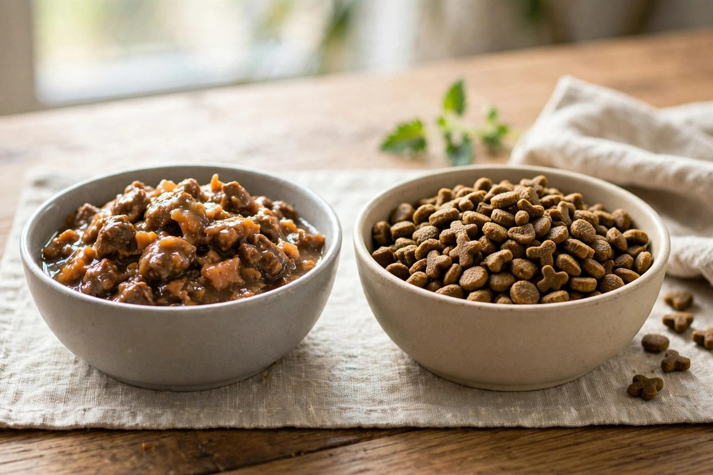

Home › Guides
Wet vs Dry Cat Food: Which Is Better?

Every cat owner meets this question sooner or later, and the honest answer is that both wet and dry food can be part of a healthy diet. The right choice depends on your cat's health, age, teeth, water intake and your budget. What matters most is that the food is complete and balanced, and that portions are measured.
Wet food: the case for it
Wet food is roughly 70 to 80 percent water, so a cat eating wet food takes in a lot of moisture with every meal. That helps the kidneys and the urinary tract, and it matters most for cats that drink little. Wet food also tends to smell stronger, which helps fussy eaters and older cats.
Wet food is usually lower in calories per gram, so a cat can eat a satisfying portion without many calories. The downsides are cost, the need to refrigerate open tins, and waste if the cat leaves food in the bowl. Uneaten wet food should be removed after about half an hour.
Dry food: the case for it
Dry food is convenient, keeps well, costs less per calorie, and works in puzzle feeders and automatic feeders. It is easy to measure and easy to store. For busy households, dry food makes a consistent routine simple.
The main drawback is water. A cat eating only dry food must drink enough to make up the difference, and many cats do not. Dry food also does not clean teeth in any meaningful way, despite the common claim. Dental health still needs brushing or veterinary care.
What the evidence actually says
There is no strong evidence that wet food is always better, or that dry food always causes urinary problems. Studies link low water intake, not dry food itself, to urinary issues. Similarly, dental disease is common in cats fed either type, because neither food scrubs teeth effectively.
The quality of the food matters more than the format. A complete, well-made dry food beats a poor wet food, and the reverse is also true. Check the label for a statement that the food is complete and balanced for your cat's life stage.
Mixing wet and dry
A mix is a popular middle ground: wet food once a day for moisture and dry food for the other meal or for grazing. When mixing, count the calories from both, because it is easy to double-feed by accident. Use the feeding amount calculator on our homepage to convert calories into grams.
Introduce a new format slowly over a week. Some cats refuse wet food, and some refuse dry food, and that is fine. A cat that eats one format happily and drinks well is better off than a cat that picks at a mix it dislikes.
Special cases
Kittens often do well on a mix, since wet food helps them learn to eat and dry food is always available. Senior cats with dental problems or a poor sense of smell usually prefer wet food. Cats with kidney disease are often prescribed wet renal diets, because the extra water helps.
Overweight cats may do better with wet food, because the portion looks bigger for fewer calories. Cats with urinary problems may also benefit from the extra water. In every special case, ask your vet what fits your cat.
Frequently Asked Questions
Can I feed wet food in the morning and dry food at night?
Yes. Many owners do exactly that. Just add up the calories from both meals so you do not overfeed.
Does dry food clean a cat's teeth?
Not really. Ordinary kibble does not scrub teeth. Some veterinary dental diets are designed differently, but daily brushing or professional cleaning is what protects teeth.
How long can wet food sit out?
About 30 minutes at room temperature. After that, throw it away and wash the bowl.